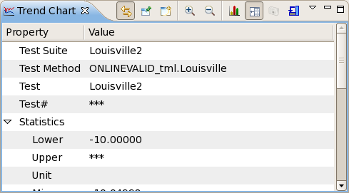

Examining the underlying data of an analysis view
The underlying data displayed in an analysis view can be displayed in the summary tab or in the graph statistics. In some view types, data for an individual data point can be displayed in the raw data view.
About this task
Display the underlying data of an analysis view to analyze them numerically (in addition to as a graph or table).
Before you begin
Procedures
Examining underlying data in a summary tab
If the graph whose data you want to examine is not pinned (see for more information on pinning), that is, if it is automatically updated when the selection changes, look at the selected row in the frontmost summary tab to see the underlying data.
This is not possible if the graph is pinned.
Examining underlying data in the chart statistics
If you cannot or do not want to examine the underlying data in the summary view (see above), or if you want to view the additional data that some chart statistics include:
- In the view of the chart you want to examine, click the Statistics button in the toolbar.
The statistics sheet of the graph is displayed. The content of this sheet varies by chart type.
- To hide the statistics sheet, click the Statistics button again.
Examining underlying data in a raw data view
To see the data underlying a single data-point, right-click that data point in the chart and choose Show in Raw Data from the shortcut menu.
This highlights the row in the raw data view that contains the data for this data point.
This option is available in trend, probability, and box charts.
Results
The statistics sheet displays the charted information in numerical form.
Example
This image shows part of the underlying data of a trend graph.

Functional changes
- Introduced in SmarTest 7.2.0
- SmarTest 7.2.2: Added option to view underlying data in a raw data view.